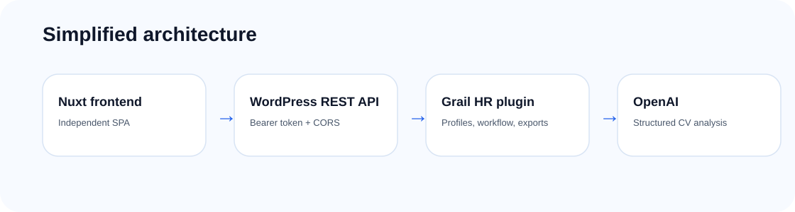

A clear split between WordPress backend and Nuxt frontend.
WordPress acts as the business shell: REST API, admin, persistence, logs, settings and security. Nuxt provides an independent application frontend consuming that API.

WordPress plugin
The plugin handles authentication, profiles, workflow, exports, logs and OpenAI settings.
Nuxt frontend
The Nuxt app is an independent SPA. Locally, it runs on localhost:3000 and calls the WordPress REST API.
OpenAI
Resume analysis uses structured outputs to normalize extracted information.
Persistence
Profiles are indexed in WordPress. The source resume and extracted raw text are not persisted.
Business contexts
| Context | Responsibility |
|---|---|
| IdentityAccess | Login, tokens, active users and permissions. |
| CvIntake | Temporary PDF upload, file validation and text extraction. |
| ProfileAnalysis | Prompting, OpenAI call, structured JSON and normalization. |
| ProfileManagement | CPT, workflow, exports, search and server-side tables. |
| Settings | OpenAI configuration, model, dev CORS and limits. |